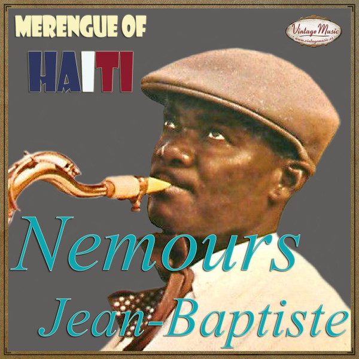

L’histoire du Konpa
Au milieu des années 1950, les villes d’Haïti, en particulier Port-au-Prince, sont le foyer d’une scène musicale florissante concentrée dans les hôtels et boîtes de nuit. De nombreux musiciens caribéens en tournée passent régulièrement par Haïti, de même qu’un certain nombre de jazzmen américains. En République Dominicaine, le merengue (cousin de la méringue haïtienne) atteint une popularité sans précédent grâce, en partie, au soutien du président Rafael Trujillo. De nombreux musiciens haïtiens grandissent en écoutant les merengue cibaeño (forme la plus ancienne de merengue). Mais c’est avec la tournée en 1954 de Viloria et son groupe Tipico Cibaeño que Haïti succombe réellement à la vague merengue. Le genre est particulièrement populaire chez les prostituées dominicaines d’Haïti qui enseignent aux hommes haïtiens comment le danser, dans les salles de danse concentrées pour beaucoup dans la commune de Carrefour.

Nemours Jean-Baptiste
En 1955, Nemours Jean-Baptiste forme en compagnie de son compère, le virtuose du saxophone Webert Sicot, le Conjunto International avec l’aide du promoteur et propriétaire de discothèque Jean Lumarc. Le 26 juillet de la même année, à la Place Sainte Anne, Port-au-Prince, l’orchestre donne son premier concert. Au début, les rythmes principaux que jouaient Nemours Jean Baptiste et ses musiciens étaient fondés sur le genre populaire Grenn Siwèl/Twoubadou. En 1957, Nemours Jean-Baptiste (avec l’assistance des frères Duroseau -Kreudzer et Richard), inventa graduellement le Compas Direct s’appuyant sur le Grenn Siwèl ayant sa source dans le Vodou haïtien. C’était la naissance de tout un genre et toute une culture musicale. La présence des instruments à vent comme le saxophone, la trompette, le trombone pour ne citer que ces instruments, et la composition même des premiers groupes pouvant compter une quinzaine de musiciens (percussions, pianiste, bassiste et plus tard avec l’avènement des mini-jazz avec en tête le groupe les Shleu Shleu, guitariste lead et guitariste secondaire) illustrent le lien entre le Compas et le jazz. Avec la contredanse Kwaze le 8 venue du sud d’Haïti, le compas participe à la culture haïtienne. Il a connu, durant la décennie 1970-1980, un grand succès dans la Caraïbe et a donné naissance au zouk dans les Antilles françaises.
